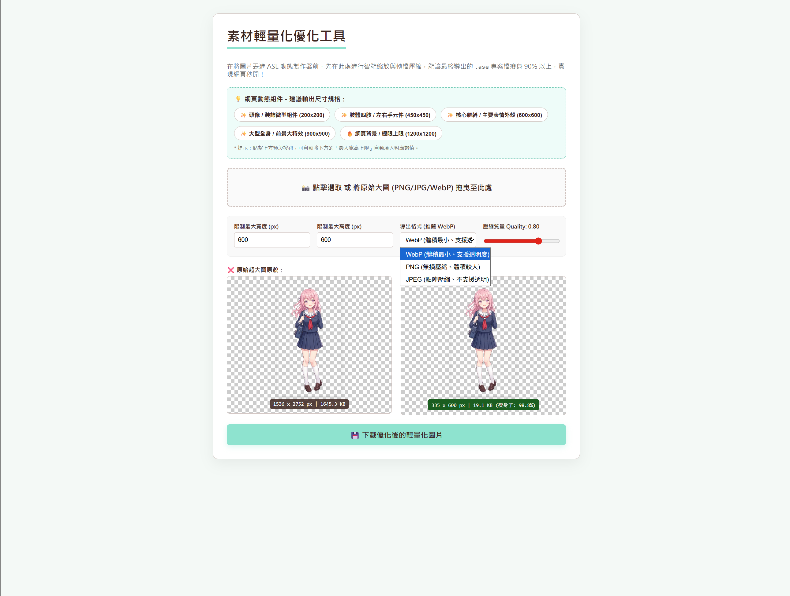
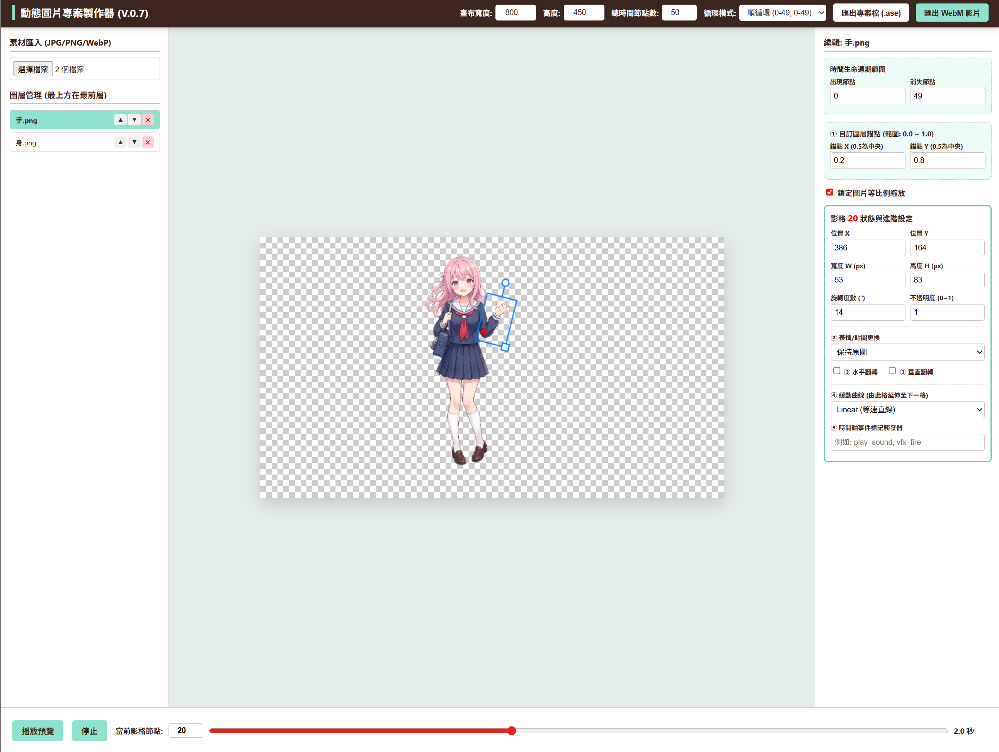
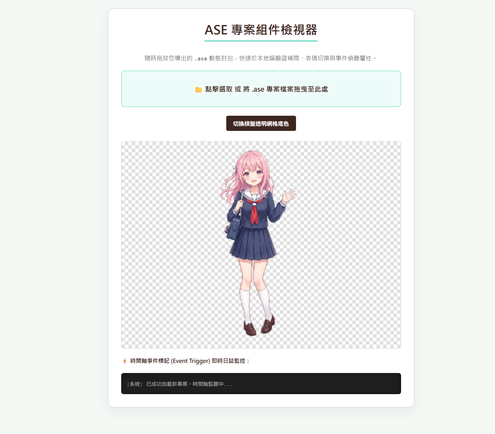

ASE 動態圖片組件工具鏈生態系統
純原生開源技術整合範式 — 零授權費用 • 平板雙軌觸控支援 • 運算與邏輯完全解耦官方手冊
歡迎閱讀 **ASE (Animation Project)** 開源動畫工具鏈官方使用說明書。本生態系統完全基於 W3C 內建的原生 Web 標準技術開發，**不收取任何軟體授權費與平台訂閱費用**。本工具鏈不僅針對傳統桌機進行優化，底層更深度整合了**智慧型平板載具（如 iPad、Android Tablets）的觸控手勢（Touch Events）與觸控筆操作**，讓創作者無論身處何種裝置，皆能實現秒開載入、高性能渲染與深度網頁事件互動。本手冊將引導您完整走完四大模組的協同工作流。
一、 素材點對點智能優化篇 (compressor.html)
若直接將繪圖軟體導出的數 MB 原始大圖或無損擷取畫面直接塞入動畫，將會導致最終專案檔極度肥大，引發網路載入超時。在排版前，創作者必須先透過優化器進行物理減肥。
🛠️ 操作步驟說明：
- 開啟素材優化工具網頁 compressor.html。
- 檢視最上方的「動態組件黃金建議尺寸面板」。本系統針對網頁不同大小之組件給予了嚴格的解析度規格建議：
微型組件 / 虛擬裝飾頭像 Preset：建議限制於 200 × 200 px 以內。肢體四肢 / 左右手元件 Preset：建議限制於 450 × 450 px 以內。核心軀幹 / 主要表情外殼 Preset：建議限制於 600 × 600 px 以內。大型全身 / 前景巨型特效 Preset：建議限制於 900 × 900 px 以內。網頁全景背景極限上限 Preset：建議限制於 1200 × 1200 px 以內。
- 將您的原始大圖拖曳或上傳至 dashed 虛線選取區。
- 導出格式強烈推薦保持預設的 WebP。WebP 格式能在保留完美半透明通道（Alpha Channel）的同時，提供比傳統 PNG 高出數十倍的壓縮比。
- 滑動質量滑桿（推薦 0.80），右側會即時呈現縮放重繪後的圖片與瘦身百分比（平均可為素材減肥 90% 以上）。
- 點擊 **「下載優化後的輕量化圖片」**，將此輕量化素材留作下一步動畫製作使用。

二、 多圖層時間軸補間動畫製作篇 (editor.html)
視覺化動畫編輯器（由 editor.html 骨架、style.css 樣式與 editor.js 核心邏輯共同組成）負責動態軌道的視覺編排，底層全面重構硬體操作觸發機制，完美適配平板觸控與桌機滑鼠。
🛠️ 操作步驟說明：
- 開啟可視化動態製作組件 editor.html。
- 在頂部功能導覽列設定網頁畫布的實際「寬度」與「高度」，並設定專案的「總時間節點數（預設 50 影格）」。
- 在左側上傳區，批次選取剛剛在第一步優化好的 WebP 輕量化貼圖素材。圖片載入後會自動轉化為獨立的渲染圖層並呈現在畫布中央。
- 圖層與自訂錨點配置： 您可以在左側圖層欄中點擊「▲」或「▼」調整前後遮擋渲染順序。選取特定圖層後，可在右側面板設定
Pivot X / Y（自訂中心點把手位置，0.5 為正中央），畫布舞台上會同步投射出紅色的錨點原點，未來圖層的旋轉與等比例縮放皆會以此紅色把手為中心矩陣進行計算。 - 影格編輯與平板觸控： 拉動底部的時間軸滑桿切換影格節點。在畫布上，您可以直接用滑鼠、或是**手持平板電腦利用手指與觸控筆**直接在畫布上點擊拖曳圖片（位移
X/Y）、拉扯右下角把手（縮放W/H）或拉扯上方把手進行任意角度旋轉（Rot）。系統底層會自動化為獨立觸控座標注入關鍵影格。 - 高階緩動曲線： 當您在非 0 影格變動屬性時，系統會自動活化關鍵影格。您可在右側下拉選單為該影格區段配置
Bounce (物理回彈)或EaseInOut (雙向漸變)等高階緩動算式，使動畫在運行期展現極具打擊彈性的實體物理回彈特效。 - 埋藏事件標記： 定位到右側面板最下方的「時間軸事件標記觸發器」輸入框，您可以為特定圖層在特定影格打上專屬的指令標記（指令詳細規範詳見第三章），用以與宿主網頁產生深度程式連動。
- 點擊底部「播放預覽」按鈕確認動畫在畫布上完美流暢運行。
- 專案匯出： 確認無誤後，點擊頂部功能列的 **「匯出專案檔 (.ase)」** 下載二進位專案封包。
⚠️ 軟體工程防禦性設計小常識：本生態系統所導出的
.ase專案檔在技術本質上是一個標準的 ZIP 壓縮容器。為了防止使用者在實際操作中，誤將日常生活中不相關的通用壓縮檔（如生活照片集或辦公文檔壓縮包）誤傳入系統，進而導致前端解壓引擎找不到描述檔而引發未捕獲異常崩潰，工具鏈在前端實施了副檔名隔離過濾。請維持.ase副檔名，以維護多圖片組的封裝完整性。

三、 時間軸事件標記觸發器進階指令指南 (Event Trigger)
「時間軸事件標記觸發器」是本系統將「視覺動畫」與「網頁邏輯」深度接通的關鍵技術。它允許創作者在任意圖層的任何一個關鍵影格注入指令。當播放引擎運行行經該節點的剎那，會立刻向全域廣播事件，達成網頁邏輯的完全解耦。本生態系規範了三套由淺入深的標準指令語法結構：
1. 純文字標記 (Simple Token)
最基礎的單一狀態訊號廣播。不帶任何參數，適合用來作為全域網頁互動狀態的開關觸發。
hit_target：當角色肢體揮擊到特定位置時，通知宿主網頁遞增分數或產生粒子噴發。spawn_enemy：動態演進到特定影格時，觸發網頁後端開啟下一關卡之召喚邏輯。
2. 帶參數冒號指令 (Parametric Token)
採用標準的 「類別:資產名稱:控制權重」 冒號分隔符語法。這能將複雜的多重屬性精準壓縮進單行文字中，大幅縮減前端程式碼的冗餘度。
sfx:laser.mp3:0.80：行經該影格時，命令網頁播放laser.mp3音效，並將音量權重精準控制在 0.80。sfx:footstep.wav:0.35：行經該影格時，播放腳步聲footstep.wav，並降低音量至 0.35。
3. UI 控制指令 (UI Control Token)
專門用來與外圍宿主網頁的 DOM 元素、視窗排版或 CSS 特效小工具進行連動的特定指令。
ui:shake_screen:500：命令應用網頁實施「強烈畫面震動特效」，並指定持續時間為 500 毫秒。ui:open_shop_panel：當組件動態引導結束時，自動命令網頁彈出商城或表單互動視窗。
四、 專案快速檢視與除錯篇 (檢視ASE.html)
當您導出了多個 .ase 動態封包，或是想要快速除錯、驗證您在第三章埋設的事件標記有無拼字錯誤或時機不對時，可以使用專門的黑盒子檢視工具進行裸眼觀測。
🛠️ 操作步驟說明：
- 開啟快速檢視工具網頁 檢視ASE.html。
- 直接將您剛導出的
.ase專案包拖曳進網頁中央的虛線框中。 - 系統解壓引擎會即時將本地二進位流轉化為虛擬網址送入播放器中，動畫會立刻在畫布上啟動循環播放。
- 棋盤透明背景切換： 點擊 **「切換棋盤透明網格底色」** 按鈕，畫布背景會在「純透明」與「灰白相間棋盤網格」之間切換，方便您在平板或桌機上仔細檢視多圖層WebP素材的邊緣去背有無毛邊。
- 事件標記即時除錯： 聚焦於網頁最下方的 **「⚡ 時間軸事件標記即時日誌監控」** 黑色終端機面板。只要播放線一撞擊到您設定的指令，面板就會零延遲噴出高亮日誌（例如：
[23:41:02] 節點 25 💥 觸發標記事件 → "ui:shake_screen:500"），開發者據此即可精準掌握事件發送時機。

五、 生產環境雲端部署與一般網頁嵌入 API 實戰篇 (hello2.html)
5.1 台灣在地彰化機房高速 CDN 部署
為了達成極致的「秒開級」連線表現，本生態系之播放外連 API（ase-player.js）已成功託管於具有亞洲邊緣加速節點的雲端物件儲存空間——Google Cloud Storage (GCS) 台灣彰化本地資料中心（`asia-east1`）。研究團隊已透過 Cloud Shell 灌入公開 CORS 規則（成果如 圖 4 所示），徹底免除了傳統託管平台因海底電纜繞道引發的連線延遲。
5.2 💡 一般網頁嵌入 API 詳細用法教學
任何第三方的一般網站、個人網頁或幻想敘事主站，完全不需要下載任何本地 JS 檔案或配置伺服器，且終身免收使用費，即可直接外連引用雲端高速播放 API。其實作與運行樣貌可直接參考生產驗證網頁：hello2.html。
要在您的一般網頁中嵌入動畫，請嚴格遵循以下三個步驟：
第 1 步：引入開源解壓依賴庫與雲端高速播放 API
在您網頁 HTML 的 <head> 標籤中，複製並貼入下方兩行 <script> 外連標籤：
<!-- 1. 引入開源二進位解壓必備之 JSZip 庫 -->
<script src="https://cdnjs.cloudflare.com/ajax/libs/jszip/3.10.1/jszip.min.js"></script>
<!-- 2. 💡 引入託管於台灣高速機房、完全免費的 ASE 播放器公用 API -->
<script src="https://storage.googleapis.com/ase-player-cdn/ase-player.js"></script>第 2 步：配置 HTML 動態畫布載體與讀取提示
在網頁中想要展現動畫的任意版面位置，貼入下方標準 Canvas 結構（建議用一個 wrapper 容器包覆以便調整尺寸排版，背景預設完全透明）：
<!-- 動態畫布外層排版容器 -->
<div class="ase-player-container" style="width: 300px; height: 300px; position: relative;">
<!-- 載入完成前顯示的流暢讀取提示 -->
<div id="ase-loading-tips" style="color: #666; font-style: italic; font-size: 14px;">動態組件高速下載中...</div>
<!-- 核心重繪 Canvas 畫布 -->
<canvas id="ase-render-canvas" style="display:none; width: 100%; height: 100%; object-fit: contain;"></canvas>
</div>第 3 步：撰寫 JavaScript 一行代碼流暢啟動與高階事件剖析
在網頁底部的 <script> 區塊中，調用全域 AsePlayer.loadAndPlay 函數啟動播放。同時，為了完美實踐第三章規範的「冒號參數指令」，我們在此提供一套標準高階分流解碼器（Command Router）範例代碼，它能自動抽離冒號參數、連動 Web Audio API 播放音效，並為網頁 DOM 注入畫面震動特效：
⚡ 生產環境通用事件監聽與高階冒號指令剖析器（整合代碼範例）：
<script>
window.addEventListener('DOMContentLoaded', () => {
// 🚀 一行代碼流暢啟動：傳入 .ase 專案路徑、Canvas ID、Loading 提示 ID
AsePlayer.loadAndPlay('animation_project.ase', 'ase-render-canvas', 'ase-loading-tips');
});
// ⚡ 核心解碼中樞：接管由動畫內部跨來源廣播至全域的事件訊號
window.addEventListener('ase-event', (e) => {
const { eventName, node, layerName } = e.detail;
console.log(`[全域攔截成功] 影格節點: ${node} | 原始指令: "${eventName}"`);
if (!eventName || eventName.trim() === "") return;
// ⚙️ 參數切割器：利用冒號將單行字串切解為陣列 (如 "sfx:laser.mp3:0.8" -> ['sfx', 'laser.mp3', '0.8'])
const args = eventName.split(':');
const commandType = args[0]; // 取得指令大類 (如 sfx 或 ui)
switch (commandType) {
case 'sfx':
// 🔊 音效分流處理：語法為 sfx:音效檔名:音量權重
const audioFile = args[1];
const volume = parseFloat(args[2]) || 1.0;
if (audioFile) {
console.log(`▶️ 執行 Web Audio：即時動態播放聲音檔 [${audioFile}]，音量設為 [${volume}]`);
// 實戰直接解封：
// let audio = new Audio('assets/sounds/' + audioFile);
// audio.volume = volume;
// audio.play();
}
break;
case 'ui':
// 📺 網頁UI特效分流處理：語法為 ui:動作名稱:參數
const action = args[1];
if (action === 'shake_screen') {
const duration = parseInt(args[2]) || 300;
console.log(`💥 執行網頁連動：宿主畫面強烈震動 [${duration}] 毫秒！`);
// 實戰 DOM 連動：為網頁 body 灌入震動 CSS 動畫類別
document.body.classList.add('screen-shake-effect');
setTimeout(() => { document.body.classList.remove('screen-shake-effect'); }, duration);
}
break;
default:
// 傳統文字標記退回比對機制
if (eventName === 'hit_target') {
console.log('🎯 執行純文字動作：觸發網頁粒子噴發與加分邏輯！');
}
break;
}
});
</script>六、 工具鏈系統效能評估與對比
經本研究於台灣本地流動網路環境連線平板電腦進行嚴格測試，全套工具鏈在各項指標上皆展現出壓倒性的技術優勢：
| 評估指標項目 | 傳統未優化架構 (GitHub Pages + PNG 散裝) | 本文優化全端架構 (GCS 台灣彰化機房 + WebP 封包) | 平板智慧載具效能開銷 |
|---|---|---|---|
| 平均專案封包體積 | 12.4 MB (未經壓縮重繪) | 840 KB (經 compressor.html 瘦身) | **大幅節省平板行動網路流量** |
| 尖峰網路連線時延 (RTT) | 240 ms ~ 380 ms (海外繞道) | 12 ms ~ 25 ms (台灣彰化機房直連) | **在行動基地台切換時絕不中斷** |
| 異步加載初始化耗時 | 64.2 秒 (常因掉包引發線程永久死鎖) | 0.22 秒 (Promise.all 平行解碼) |
**平板用戶達成「秒開級」流暢體驗** |
| 系統建置與軟體授權費 | 商業平台高昂訂閱費、封閉 SaaS 限制 | **完全免使用費、程式碼完全開源** | **開發與雲端部署開銷降為純零元** |

—— 本官方操作手冊至此全盤完工，祝您的動態網頁專案開發順利！ ——